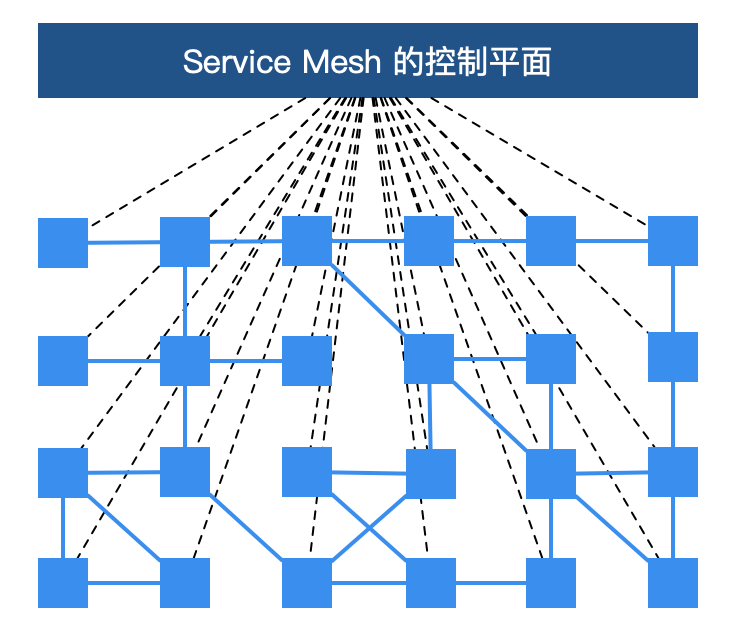
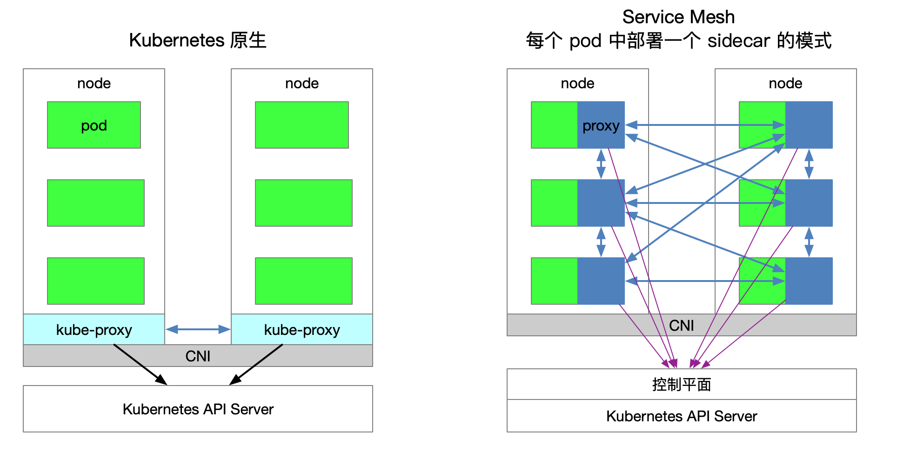
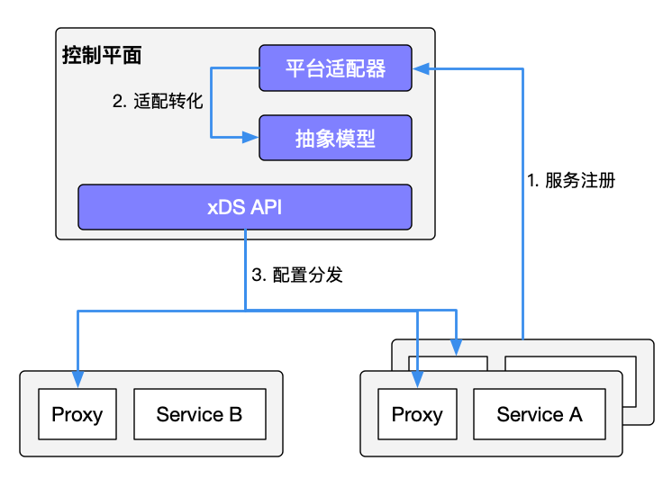
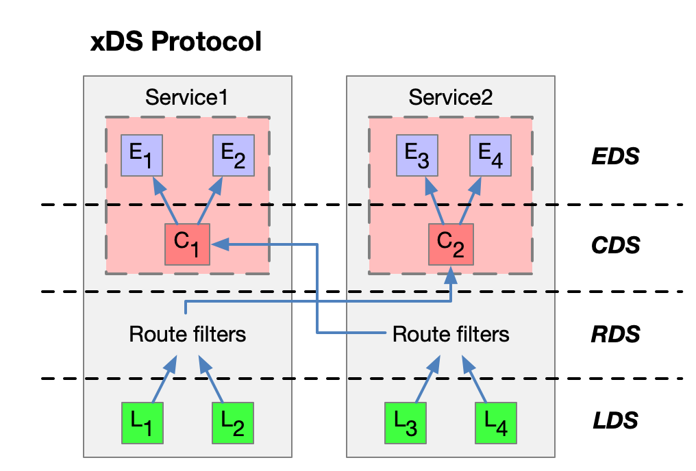
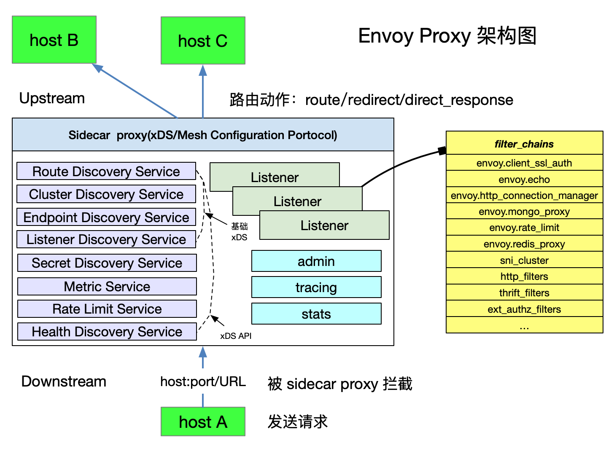

简介
Table of Contents
概述
微服务架构可谓是当前软件开发领域的技术热点，它在各种博客、社交媒体和会议演讲上的出镜率非常之高，无论是做基础架构还是做业务系统的工程师，对微服务都相当关注，而这个现象与热度到目前为止，已经持续了近 5 年之久
尤其是近些年来，微服务架构逐渐发展成熟，从最初的星星之火到现在的大规模的落地与实践，几乎已经成为分布式环境下的首选架构。微服务成为时下技术热点，大量互联网公司都在做微服务架构的落地和推广。同时，也有很多传统企业基于微服务和容器，在做互联网技术转型
而在这个技术转型中，国内有一个趋势，以 Spring Cloud 与 Dubbo 为代表的微服务开发框架非常普及和受欢迎。然而软件开发没有银弹
基于这些传统微服务框架构建的应用系统在享受其优势的同时，痛点也越加明显。这些痛点包括但不限于以下几点：
- 侵入性强 ：想要集成 SDK 的能力，除了需要添加相关依赖，往往还需要在业务代码中增加一部分的代码、或注解、或配置；业务代码与治理层代码界限不清晰
- 升级成本高 ：每次升级都需要业务应用修改 SDK 版本，重新进行功能回归测试，并且对每一台机器进行部署上线，而这对于业务方来说，与业务的快速迭代开发是有冲突的，大多不愿意停下来做这些与业务目标不太相关的事情
- 版本碎片化严重 ：由于升级成本高，而中间件却不会停止向前发展的步伐，久而久之，就会导致线上不同服务引用的 SDK 版本不统一、能力参差不齐，造成很难统一治理
- 中间件演变困难 ：由于版本碎片化严重，导致中间件向前演进的过程中就需要在代码中兼容各种各样的老版本逻辑，带着 “枷锁” 前行，无法实现快速迭代
- 内容多、门槛高 ：Spring Cloud 被称为微服务治理的全家桶，包含大大小小几十个组件，内容相当之多，往往需要几年时间去熟悉其中的关键组件。而要想使用 Spring Cloud 作为完整的治理框架，则需要深入了解其中原理与实现，否则遇到问题还是很难定位
- 治理功能不全 ：不同于 RPC 框架，Spring Cloud 作为治理全家桶的典型，也不是万能的，诸如协议转换支持、多重授权机制、动态请求路由、故障注入、灰度发布等高级功能并没有覆盖到。而这些功能往往是企业大规模落地不可获缺的功能，因此公司往往还需要投入其它人力进行相关功能的自研或者调研其它组件作为补充。
以上列出了传统微服务框架的局限性，但这并不意味着它们就一无是处了
在中小企业，采用 Spring Cloud 这样的传统微服务框架已经可以满足绝大部分服务治理的需求，并且借此快速推进微服务化改造
这些痛点往往是技术发展到一定的程度必然要经历的阶段，这些痛点促使技术不断发展、不断前进
基本概念
Service Mesh 一词最早由开发 Linkerd 的 Buoyant 公司提出，并于 2016 年 9 月29 日第一次公开使用了这一术语 William Morgan，Buoyant CEO，对 Service Mesh 这一概念定义如下： A service mesh is a dedicated infrastructure layer for handling service-to-service communication. It’s responsible for the reliable delivery of requests through the complex topology of services that comprise a modern, cloud native application. In practice, the service mesh is typically implemented as an array of lightweight network proxies that are deployed alongside application code, without the application needing to be aware
翻译成中文如下：
Service Mesh 是一个专门处理 服务通讯 的 基础设施层 。它的职责是在由 云原生应用 组成服务的复杂拓扑结构下进行 可靠的 请求传送 。在实践中，它是一组和应用服务部署在一起的 轻量级的网络代理 ，并且对应用服务 透明 。以上这段话有四个关键点：
- 本质：基础设施层
- 功能：请求分发
- 部署：网络代理
- 特点：透明
2017 年，随着 Linkerd 的传入，Service Mesh 进入国内社区的视野，并且由国内的技术布道师们翻译成“服务网格”
架构
服务网格从总体架构上来讲比较简单，不过是一堆紧挨着各项服务的用户 代理 ，外加一组 任务管理流程 组成：
- 代理：在服务网格中被称为 数据层 或 数据平面 （data plane）， 截获 不同服务之间的调用并对其进行 处理
管理流程：被称为 控制层 或 控制平面 （control plane）， 协调 代理的行为，并为运维人员提供 API，用来操控和测量整个网络

更进一步地说，服务网格是一个专用的基础设施层，旨在“在微服务架构中实现可靠、快速和安全的服务间调用”。它不是一个“服务”的网格，而是一个“代理”的网格，服务可以插入这个代理，从而使网络抽象化。在典型的服务网格中：
- 这些代理作为一个 sidecar （边车）被 注入 到每个 服务部署 中
- 服务不直接通过网络调用服务，而是 调用 它们 本地的 sidecar 代理 ，而 sidecar 代理又代表服务 管理请求 ，从而封装了服务间通信的复杂性
- 相互连接的 sidecar 代理集 实现了所谓的数据平面，这与用于 配置代理 和 收集指标 的服务网格组件（控制平面）形成对比
总而言之，Service Mesh 的基础设施层主要分为两部分： 控制平面 与 数据平面
当前流行的两款开源服务网格 Istio 和 Linkerd 实际上都是这种构造
控制平面的特点：
- 不直接解析数据包
- 与控制平面中的代理通信，下发策略和配置
- 负责网络行为的可视化
- 通常提供 API 或者命令行工具可用于配置版本化管理，便于持续集成和部署。
数据平面的特点：
- 通常是按照无状态目标设计的，但实际上为了提高流量转发性能，需要缓存一些数据，因此无状态也是有争议的
- 直接处理入站和出站数据包，转发、路由、健康检查、负载均衡、认证、鉴权、产生监控数据等
- 对应用来说透明，即可以做到无感知部署
影响
那么服务网格的出现带来了哪些变革呢？
- 微服务治理与业务逻辑的解耦 ：服务网格把 SDK 中的大部分能力从应用中剥离出来，拆解为独立进程，以 sidecar 的模式进行部署。服务网格通过将服务通信及相关管控功能从业务程序中分离并下沉到基础设施层，使其和业务系统完全解耦，使开发人员更加专注于业务本身
注意，这里提到了一个词“大部分”，SDK 中往往还需要保留协议编解码的逻辑，甚至在某些场景下还需要一个轻量级的 SDK 来实现细粒度的治理与监控策略
例如，要想实现方法级别的调用链追踪，服务网格则需要业务应用实现 trace ID 的传递，而这部分实现逻辑也可以通过轻量级的 SDK 实现
因此，从代码层面来讲，服务网格并非是零侵入的
- 异构系统的统一治理 ：随着新技术的发展和人员更替，在同一家公司中往往会出现不同语言、不同框架的应用和服务，为了能够统一管控这些服务，以往的做法是为每种语言、每种框架都开发一套完整的 SDK，维护成本非常之高，而且给公司的中间件团队带来了很大的挑战。有了服务网格之后，通过将主体的服务治理能力下沉到基础设施，多语言的支持就轻松很多了。只需要提供一个非常轻量级的 SDK，甚至很多情况下都不需要一个单独的 SDK，就可以方便地实现多语言、多协议的统一流量管控、监控等需求
优点
服务网格相对于传统微服务框架，还拥有三大技术优势：
- 可观察性：因为服务网格是一个专用的基础设施层，所有的服务间通信都要通过它，所以它在技术堆栈中处于独特的位置，以便在服务调用级别上提供统一的遥测指标。这意味着，所有服务都被监控为“黑盒”。服务网格捕获诸如来源、目的地、协议、URL、状态码、延迟、持续时间等线路数据
这本质上等同于 web 服务器日志可以提供的数据，但是服务网格可以为所有服务捕获这些数据，而不仅仅是单个服务的 web 层
需要指出的是，收集数据仅仅是解决微服务应用程序中可观察性问题的一部分，存储与分析这些数据则需要额外能力的机制的补充，然后作用于警报或实例自动伸缩等
- 流量控制：通过 Service Mesh，可以为服务提供智能路由（蓝绿部署、金丝雀发布、A/B test）、超时重试、熔断、故障注入、流量镜像等各种控制能力
以上这些往往是传统微服务框架不具备，但是对系统来说至关重要的功能
例如，服务网格承载了微服务之间的通信流量，因此可以在网格中通过规则进行故障注入，模拟部分微服务出现故障的情况，对整个应用的健壮性进行测试
由于服务网格的设计目的是有效地将来源请求调用连接到其最优目标服务实例，所以这些流量控制特性是“面向目的地的”，这正是服务网格流量控制能力的一大特点
- 安全：在某种程度上，单体架构应用受其单地址空间的保护。然而，一旦单体架构应用被分解为多个微服务，网络就会成为一个重要的攻击面。更多的服务意味着更多的网络流量，这对黑客来说意味着更多的机会来攻击信息流。而服务网格恰恰提供了保护网络调用的能力和基础设施。服务网格的安全相关的好处主要体现在以下三个核心领域： 服务的认证 、 服务间 通讯的加密 、 安全相关策略的强制执行
缺点
然而就像之前说的软件开发没有银弹，传统微服务架构有许多痛点，而服务网格也不例外，也有它的局限性：
- 增加了复杂度：服务网格将 sidecar 代理和其它组件引入到已经很复杂的分布式环境中，会极大地增加整体链路和操作运维的复杂性
- 运维人员需要更专业：在容器编排器（如 Kubernetes）上添加 Istio 之类的服务网格，通常需要运维人员成为这两种技术的专家，以便充分使用二者的功能以及定位环境中遇到的问题
- 延迟：从链路层面来讲，服务网格是一种侵入性的、复杂的技术，可以为系统调用增加显著的延迟。这个延迟是毫秒级别的，但是在特殊业务场景下，这个延迟可能也是难以容忍的
- 平台的适配：服务网格的侵入性迫使开发人员和运维人员适应高度自治的平台并遵守平台的规则
总结
展望未来，Kubernetes 正在爆炸式发展，它已经成为企业应用的容器编排的首选
如果说 Kubernetes 已经彻底赢得了市场，并且基于 Kubernetes 的应用程序的规模和复杂性持续增加，那么就会有一个临界点，而服务网格则将是有效管理这些应用程序所必需的
随着服务网格技术的持续发展，其实现产品（如 Istio）的架构与功能的不断优化，服务网格将完全取代传统微服务架构，成为大小企业微服务化和上云改造的首选架构
istio 和 kubernates
刚听说 Service Mesh 并试用过 Istio 的人可能都会有下面几个疑问： 1. 为什么 Istio 要绑定 Kubernetes 呢？ 2. Kubernetes 和 Service Mesh 分别在云原生中扮演什么角色？ 3. Istio 扩展了 Kubernetes 的哪些方面？解决了哪些问题？ 4. Kubernetes、xDS 协议（Envoy、MOSN 等）与 Istio 之间又是什么关系？ 5. 到底该不该上 Service Mesh？ 接下来将试图带您梳理清楚 Kubernetes、xDS 协议以及 Istio Service Mesh 之间的内在联系。此外还将介绍 Kubernetes 中的负载均衡方式，xDS 协议对于 Service Mesh 的意义，为什么说即使有了 Kubernetes 还需要 Istio
使用 Service Mesh 并不是说与 Kubernetes 决裂，而是水到渠成的事情：
- Kubernetes 的本质是通过声明式配置对应用进行生命周期管理
- Service Mesh 的本质是提供应用间的流量和安全性管理以及可观察性
假如你已经使用 Kubernetes 构建了稳定的微服务平台，那么如何设置服务间调用的负载均衡和流量控制？
Envoy 创造的 xDS 协议 被众多开源软件所支持，如 Istio、Linkerd、MOSN 等
Envoy 对于 Service Mesh 或云原生来说最大的贡献就是定义了 xDS Envoy 本质上是一个 proxy，是可通过 API 配置的现代版 proxy，基于它衍生出来很多不同的使用场景，如 API Gateway、Service Mesh 中的 Sidecar proxy 和边缘代理
Kubernetes vs Service Mesh
下图展示的是 Kubernetes 与 Service Mesh 中的的服务访问关系（每个 pod 一个 sidecar 的模式）：

流量转发
Kubernetes 集群的每个节点都部署了一个 kube-proxy 组件，该组件会与 Kubernetes API Server 通信，获取集群中的 service 信息，然后设置 iptables 规则 ，直接将对某个 service 的请求发送到对应的 Endpoint（属于同一组 service 的 pod）上
服务发现
Istio Service Mesh 可以沿用 Kubernetes 中的 service 做服务注册，还可以通过控制平面的平台适配器对接其他服务发现系统，然后生成数据平面的配置（使用 CRD 声明，保存在 etcd 中）：

数据平面的透明代理以 sidecar 容器 的形式 部署 在每个 应用服务的 pod 中：
- 这些 proxy 都需要请求 控制平面 来 同步 代理配置
- 透明代理，是因为应用程序容器完全无感知代理的存在
- 该过程 kube-proxy 组件一样需要拦截流量：
- 现在kube-proxy 拦截的是进出 Kubernetes 节点的流量
- sidecar proxy 拦截的是进出该 Pod 的流量
Service Mesh 的劣势
因为 Kubernetes 每个节点上都会运行众多的 Pod，将原先 kube-proxy 方式的路由转发功能置于每个 pod 中，将导致大量的配置分发、同步和最终一致性问题
为了细粒度地进行流量管理，必将添加一系列新的抽象，从而会进一步增加用户的学习成本，但随着技术的普及，这样的情况会慢慢地得到缓解
Service Mesh 的优势
kube-proxy 的设置都是全局生效的，无法对每个服务做细粒度的控制，而 Service Mesh 通过 sidecar proxy 的方式将 Kubernetes 中对流量的控制从 service 一层抽离出来，可以做更多的扩展
kube-proxy 组件
在 Kubernetes 集群中，每个 Node 运行一个 kube-proxy 进程。kube-proxy 负责为 Service 实现了一种 VIP（虚拟 IP）的形式
在 Kubernetes v1.0 版本，代理完全在 userspace 实现 Kubernetes v1.1 版本新增了 iptables 代理模式，但并不是默认的运行模式 从 Kubernetes v1.2 起，默认使用 iptables 代理 在 Kubernetes v1.8.0-beta.0 中，添加了 ipvs 代理模式
kube-proxy 的缺陷
kube-proxy 的不足之处：
- 如果转发的 pod 不能正常提供服务，它不会自动尝试另一个 pod，当然这个可以通过 liveness probes 来解决。每个 pod 都有一个健康检查的机制，当有 pod 健康状况有问题时，kube-proxy 会删除对应的转发规则
- nodePort 类型的服务也无法添加 TLS 或者更复杂的报文路由机制
Kube-proxy 实现了流量在 Kubernetes service 多个 pod 实例间的负载均衡，但是如何对这些 service 间的流量做细粒度的控制，比如按照百分比划分流量到不同的应用版本
如果这些应用都属于同一个 service，但位于不同的 deployment 上，怎么做金丝雀发布（灰度发布）和蓝绿发布? Kubernetes 社区给出了 使用 Deployment 做金丝雀发布的方法，该方法本质上就是通过修改 pod 的 label 来将不同的 pod 划归到 Deployment 的 Service 上
Kubernetes Ingress vs Istio Gateway
kube-proxy 只能路由 Kubernetes 集群内部的流量，而Kubernetes 集群的 Pod 位于 CNI 创建的外网络中，集群外部是无法直接与其通信的
因此 Kubernetes 中创建了 ingress 这个资源对象，它由位于 Kubernetes 边缘节点的 Ingress controller 驱动，负责管理南北向流量：
- Ingress 必须对接各种 Ingress Controller 才能使用，比如 nginx ingress controller、traefik
- Ingress 只适用于 HTTP 流量，使用方式也很简单，只能对 service、port、HTTP 路径等有限字段匹配来路由流量
- 这导致它无法路由如 MySQL、Redis 和各种私有 RPC 等 TCP 流量
- 要想直接路由南北向的流量，只能使用 Service 的 LoadBalancer 或 NodePort
- 前者需要云厂商支持
- 后者需要进行额外的端口管理
- 有些 Ingress controller 支持暴露 TCP 和 UDP 服务，但是只能使用 Service 来暴露，Ingress 本身是不支持的
- 例如 nginx ingress controller，服务暴露的端口是通过创建 ConfigMap 的方式来配置的
Istio Gateway 的功能与 Kubernetes Ingress 类似，都是负责集群的南北向流量。Istio Gateway 描述的负载均衡器用于承载进出网格边缘的连接。该规范中描述了一系列开放端口和这些端口所使用的协议、负载均衡的 SNI 配置等内容
Istio Gateway 是一种 CRD 扩展，它同时复用了 sidecar proxy 的能力
xDS 协议
xDS 协议是由 Envoy 提出的
在 Envoy v2 版本 API 中最原始的 xDS 协议指的是 CDS（Cluster Discovery Service）、EDS（Endpoint Discovery service）、LDS（Listener Discovery Service） 和 RDS（Route Discovery Service）
后来在 v3 版本中又发展出了 Scoped Route Discovery Service（SRDS）、Virtual Host Discovery Service （VHDS）、Secret Discovery Service（SDS）、Runtime Discovery Service（RTDS）
下面以各有两个实例的 service，来看下 xDS 协议：

上图中的箭头不是流量进入 Proxy 后的路径或路由，也不是实际顺序，而是想象的一种 xDS 接口处理顺序，其实 xDS 之间也是有交叉引用的
支持 xDS 协议的代理通过 查询文件 或 管理服务器 来 动态发现 资源。概括地讲，对应的发现服务及其相应的 API 被称作 xDS。Envoy 通过 订阅 方式来获取资源，订阅方式有以下三种：
- 文件订阅：监控指定路径下的文件，发现动态资源的最简单方式就是将其保存于文件，并将路径配置在 ConfigSource 中的 path 参数中
- gRPC 流式订阅：每个 xDS API 可以单独配置 ApiConfigSource，指向对应的上游管理服务器的集群地址
- 轮询 REST-JSON 轮询订阅：单个 xDS API 可对 REST 端点进行的同步（长）轮询。
以上的 xDS 订阅方式详情请参考 xDS 协议解析 Istio 使用 gRPC 流式订阅的方式配置所有的数据平面的 sidecar proxy
xDS 协议要点
- CDS、EDS、LDS、RDS 是最基础的 xDS 协议，它们可以分别独立更新
- CDS 设置 Service Mesh 中有哪些服务
- EDS 设置哪些实例（Endpoint）属于这些服务（Cluster）
- LDS 设置实例上监听的端口以配置路由
- RDS 最终服务间的路由关系，应该保证最后更新 RDS
- 所有的发现服务（Discovery Service）可以连接不同的 Management Server，也就是说管理 xDS 的服务器可以是多个
- Envoy 在原始 xDS 协议的基础上进行了一些列扩充，增加了
- SDS（秘钥发现服务）
- ADS（聚合发现服务）
- HDS（健康发现服务）
- MS（Metric 服务）
- RLS（速率限制服务）等
- 为了保证数据一致性，若直接使用 xDS 原始 API 的话，需要保证这样的顺序更新：CDS –> EDS –> LDS –> RDS
这是遵循电子工程中的先合后断（Make-Before-Break）原则，即在断开原来的连接之前先建立好新的连接
应用在路由里就是为了防止设置了新的路由规则的时候却无法发现上游集群而导致流量被丢弃的情况，类似于电路里的断路
Envoy
Envoy 是 Istio Service Mesh 中默认的 Sidecar，Istio 在 Enovy 的基础上按照 Envoy 的 xDS 协议扩展了其控制平面

在讲到 Envoy xDS 协议之前还需要先熟悉下 Envoy 的基本术语
基本术语
下面是应该了解的 Envoy 里的基本术语：
- Downstream （下游）：下游主机连接到 Envoy，发送请求并接收响应，即发送请求的主机
- Upstream （上游）：上游主机接收来自 Envoy 的连接和请求，并返回响应，即接受请求的主机
- Listener （监听器）：监听器是命名网地址（例如，端口、unix domain socket 等)
- 下游客户端可以连接这些监听器。Envoy 暴露一个或者多个监听器给下游主机连接
- Cluster （集群）：集群是指 Envoy 连接的一组逻辑相同的上游主机。Envoy 通过服务发现来发现集群的成员
- 可以选择通过主动健康检查来确定集群成员的健康状态
- 通过负载均衡策略决定将请求路由到集群的哪个成员
xDS 协议是由 Envoy 提出的，现在是 Istio 中默认的 sidecar proxy 但只要实现 xDS 协议理论上都是可以作为 Istio 中的 sidecar proxy 的，例如蚂蚁金服开源的 MOSN
Envoy 中可以设置多个 Listener，每个 Listener 中又可以设置 filter chain（过滤器链表），而且过滤器是可扩展的，这样就可以更方便操作流量的行为，例如设置加密、私有 RPC 等
Istio Service Mesh

Istio 是一个功能十分丰富的 Service Mesh，它包括如下功能：
- 流量管理：这是 Istio 的最基本的功能
- 策略控制：通过 Mixer 组件和各种适配器来实现，实现访问控制系统、遥测捕获、配额管理和计费等
- 可观测性：通过 Mixer 来实现
- 安全认证：Citadel 组件做密钥和证书管理
Istio 中的流量管理
Istio 中定义了如下的 CRD 来帮助用户进行流量管理：
- Gateway：Gateway 描述了在网络边缘运行的负载均衡器，用于接收传入或传出的HTTP/TCP连接
- VirtualService：VirtualService 实际上将 Kubernetes 服务连接到 Istio Gateway。它还可以执行更多操作，例如定义一组流量路由规则，以便在主机被寻址时应用
- DestinationRule：DestinationRule 所定义的策略，决定了经过路由处理之后的流量的访问策略。简单的说就是定义流量如何路由。这些策略中可以定义负载均衡配置、连接池尺寸以及外部检测（用于在负载均衡池中对不健康主机进行识别和驱逐）配置
- EnvoyFilter：EnvoyFilter 对象描述了针对代理服务的过滤器，这些过滤器可以定制由 Istio Pilot 生成的代理配置。这个配置初级用户一般很少用到
- ServiceEntry：默认情况下 Istio Service Mesh 中的服务是无法发现 Mesh 外的服务的，ServiceEntry 能够在 Istio 内部的服务注册表中加入额外的条目，从而让网格中自动发现的服务能够访问和路由到这些手工加入的服务
Kubernetes vs xDS vs Istio
| Kubernetes | xDS | Istio Service Mesh |
| Endpoint | Endpoint | - |
| Service | Route | VirtualService |
| kube-proxy | Route | DestinationRule |
| kube-proxy | Listener | EnvoyFilter |
| Ingress | Listener | Gateway |
| Service | Cluster | ServiceEntry |
总结
- Kubernetes 的本质是应用的生命周期管理，具体来说就是部署和管理（扩缩容、自动恢复、发布）
- Kubernetes 为微服务提供了可扩展、高弹性的部署和管理平台
- Service Mesh 的基础是透明代理，通过 sidecar proxy 拦截到微服务间流量后再通过控制平面配置管理微服务的行为
- Service Mesh 将流量管理从 Kubernetes 中解耦，Service Mesh 内部的流量无需 kube-proxy 组件的支持，通过为更接近微服务应用层的抽象，管理服务间的流量、安全性和可观察性
- xDS 定义了 Service Mesh 配置的协议标准
Service Mesh 是对 Kubernetes 中的 service 更上层的抽象
什么是 Istio
Istio 作为一个开源的 Service Mesh 实现产品，一经推出就备受瞩目，成为了各大厂商和开发者争相追捧的对象 有理由相信，Istio 会成为继 Kubernetes 之后又一个明星级产品
Istio 官方文档是这样来定义自己的：
它是一个完全开源的服务网格，以透明的方式构建在现有的分布式应用中。它也是一个平台，拥有可以集成任何日志、遥测和策略系统的 API 接口。Istio 多样化的特性使你能够成功且高效地运行分布式微服务架构，并提供保护、连接和监控微服务的统一方法。
从官方定义我们可以看出，Istio 提供了一个完整的解决方案，可以以统一的方式去管理和监测你的微服务应用
同时，它还具有管理流量、实施访问策略、收集数据等方面的能力，而所有的这些都对应用透明，几乎不需要修改业务代码就能实现。
有了 Istio，你几乎可以不再需要其他的微服务框架，也不需要自己去实现服务治理等功能
只要把网络层委托给 Istio，它就能帮你完成这一系列的功能，简单来说，Istio 就是一个提供了服务治理能力的服务网格
为什么使用 Istio？
Service Mesh 也是一种 服务治理 技术，其核心能力是对 流量进行控制
从这一点来说，Service Mesh 和现有的服务治理产品在功能上是有重合的
作为一个企业，如果你的微服务应用已经具有了非常完备的服务治理能力，那么不一定非得引入 Service Mesh
但是假设系统并不具有完善的治理功能，或者系统架构中的痛点正好可以被 Service Mesh 所解决，那么使用 Service Mesh 就是你的最佳选择
相对于基于公共库的服务治理产品，Service Mesh 最大的特性就是对 应用透明 。可以将微服务应用无缝的接入网格，而无需修改业务逻辑。目前 Istio 提供了以下重要的功能：
- 为 HTTP、gRPC、WebSocket 和 TCP 流量自动负载均衡
- 通过丰富的路由规则、重试、故障转移和故障注入对流量行为进行细粒度控制
- 提供完善的可观察性方面的能力，包括对所有网格控制下的流量进行自动化度量、日志记录和追踪
- 提供 身份验证 和 授权策略 ，在集群中实现 安全的 服务间通信